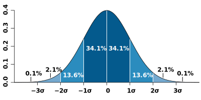
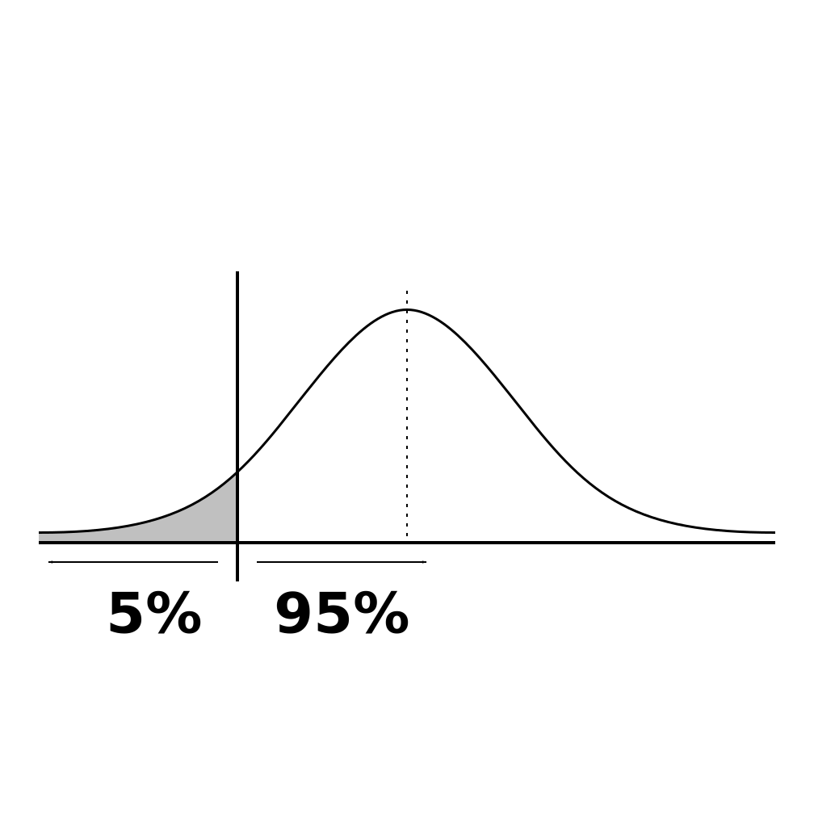
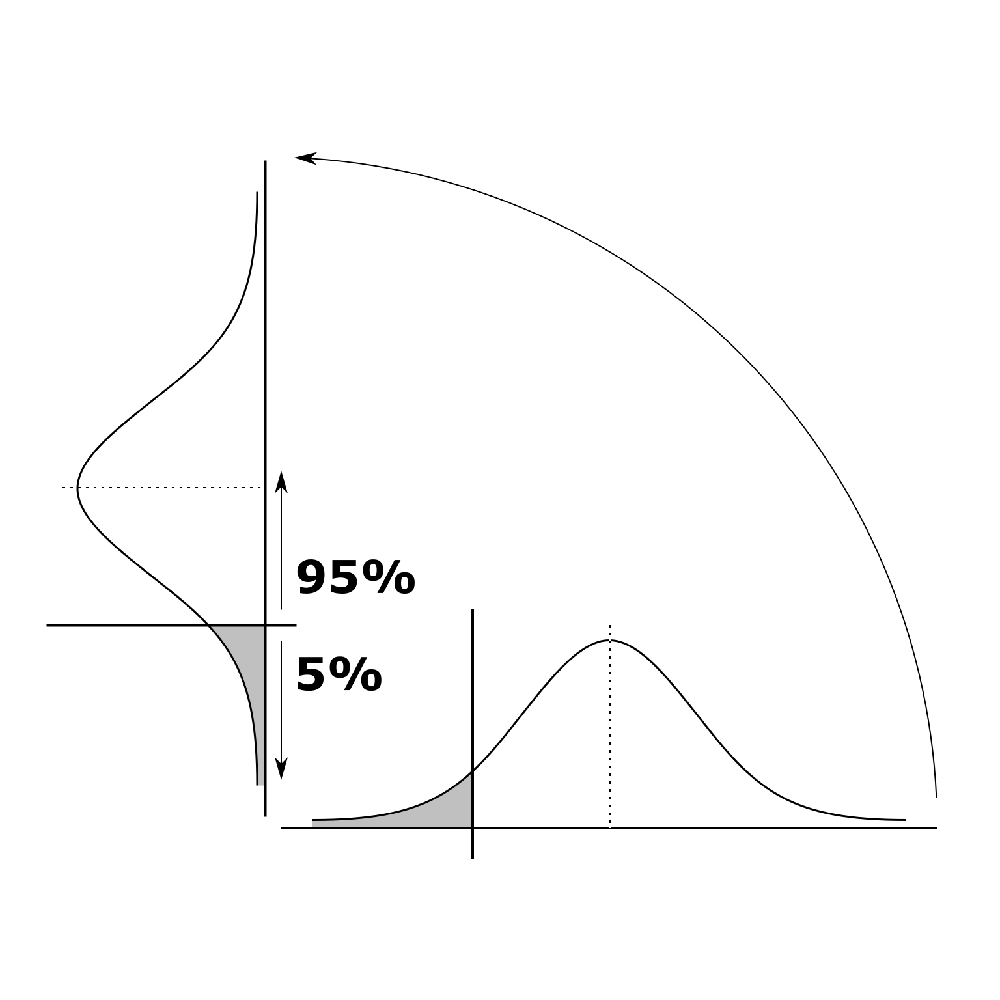

Collection of graphics from the Sideways statistics webpage.
Sideways statistics
‘Just the graphs, ma'am.’
Going sideways

A probability curve; the areas are probabilities. (Based on a graphic from Wikimedia Commons.)
{kind=link}

The probability of a population correlation. The shaded area is 5% of the total, and are the values ≤ 0.

Turning the previous graph sideways. The shaded area is still 5% of the total, and are still the values ≤ 0.
Comparing two sideways graphs.
What's what

The shaded area to the right is the “p-value”, to the left is the statistical power. The line bisecting the curve on the left is the effect size. The shape of the curves is determined by the sample size.

As alpha becomes smaller, the minimum correlation that is statistically significant becomes higher.

The greater the distance between the effect size and the minimum statistically significant sample correlation, the larger the statistical power.
The impact of sample size

The minimum correlation that is statistically significant is a function of the sample size.

Larger sample sizes have tighter probability curves, so the minimum correlation that is statistically significant becomes lower.

Larger sample sizes have tighter probability curves, so the statistical power increases. The area of the overlapped graphs that is blue is where the increase in statistical power happens.
Types of error

A 5% probability of a Type I error.

A 16% probability of a Type II error.